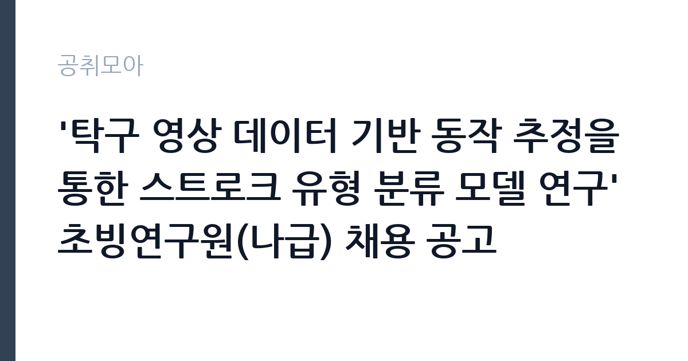

[공공기관] '탁구 영상 데이터 기반 동작 추정을 통한 스트로크 유형 분류 모델 연구' 초빙연구원(나급) 채용 공고
서울올림픽기념국민체육진흥공단 · 서울 · 마감 2026-10-07 (D-15) · 출처 잡알리오

한눈에 보는 모집 조건
| 기관 | 서울올림픽기념국민체육진흥공단 |
|---|---|
| 공고명 | '탁구 영상 데이터 기반 동작 추정을 통한 스트로크 유형 분류 모델 연구' 초빙연구원(나급) 채용 공고 |
| 고용형태 | 정규직 |
| 근무지 | 서울 |
| 게시일 | 2026-09-23 |
| 마감일 | 2026-10-07 (D-15) |
지원자격, 이렇게 읽으세요
- 공공기관 채용공시
- 세부 조건은 원문 공고문 확인
공고문의 응시자격은 짧게 쓰여 있지만 실제로는 세 가지를 봅니다. 첫째 결격사유 해당 여부, 둘째 자격·경력의 직무 연관성, 셋째 근무 시작 가능일입니다. 셋 중 하나라도 애매하면 원문 공고문의 세부 조항을 먼저 확인하고 지원서를 쓰세요. 특히 서울올림픽기념국민체육진흥공단 공고는 정규직 전형이라 서류에서 직무 연관 키워드(공공기관)를 명시하는 게 유리합니다.
이 공고의 포인트
'' 조건을 눈여겨보세요. 이번 서울올림픽기념국민체육진흥공단 모집에서 '공공기관 채용공시' 항목이 사실상 1차 필터 역할을 합니다. 본인이 맞는다면 지원 우선순위를 맨 위로 올리고, 아니라면 비슷한 조건의 관련 공고 3개를 함께 검토해 차선을 마련해 두세요.
전형은 어떻게 진행되나
일반적인 순서는 서류심사 통과 후 면접심사입니다. 서류에서는 직무와 연결되는 경험이 있는지, 면접에서는 그 경험을 직접 설명할 수 있는지를 봅니다. 마감일(2026-10-07) 코앞에 몰리면 원서 접수 자체가 안 될 수 있으니 최소 하루 전에 제출하세요. 제출 뒤에는 접수번호·수험표가 정상 발급됐는지 확인이 필수입니다.
원문에서 확인한 전형 방식
1. 공통 ㅇ 연령 제한 없음 * 단, 채용공고일 기준 만 60세 미만인 사람 ㅇ 공단 인사규정 제20조(임용결격사유)에 해당하지 않는 사람 ㅇ 채용예정일 즉시 근무 가능한 사람 2. 필수 ㅇ 스포츠데이터과학(체육측정평가, 스포츠기록분석, 스포츠ICT, 스포츠데이터분석) 전공 석사학위(예정*)자 ㅇ 체육학 관련 학사학위자로 스포츠데이터분석 경력 2년 이상(경력에는 석사과정 포함) * 학위 예정자는 졸업예정증명서 제출 가능자에 한함 ======================================================================= * 증빙서류를 제출하지 않은 경력은 경력 기간에 포함되지 않음 ** 경력이라 함은 연구기관(대학 포함) 등에서 공동연구자, 연구보조원, 조교 등 업무를 수행한 경력을 말하며, 월 단위 합산함.(단, 학사학위 취득 이후 경력에 한해 인정하며 석ㆍ박사학위과정 기간과 다른 경력기간이 중복되는 경우 본인에게 유리한 경력 하나만 인정) *** 15일 이상 근무기간은 1개월로 인정함, 재직 중인 경우 공고일 기준으로 기간 산정
위 내용은 서울올림픽기념국민체육진흥공단 원문 공고의 전형 항목을 그대로 옮긴 것입니다. 단계별 배수와 평가 요소가 적혀 있으니 본인 강점과 맞는 단계에 맞춰 준비 순서를 정하세요. 전형별 합격자 발표일도 원문에서 함께 확인하는 것이 좋습니다.
이런 분께 추천해요
- 서울 근무가 가능한 분 — 통근·거주 조건이 맞는지가 1순위입니다
- 정규직 전형을 찾는 분 — 공공기관 분야 관심자라면 우선 검토 대상입니다
- 마감(2026-10-07) 안에 서류를 낼 수 있는 분 — D-15이니 오늘 지원서 초안부터 잡으세요
지원 전 체크리스트
- 응시자격 중 본인 해당 항목에 표시했는가
- 가점·우대 증빙 발급 소요일을 확인했는가
- 마감 당일이 아닌 2026-10-07 전날 제출 계획인가
- 정규직 계약조건(기간·연장)을 읽었는가
모집 일정과 제출 타이밍
게시일은 2026-09-23, 마감은 2026-10-07입니다. 남은 기간은 약 15일입니다. 서류 준비에 14일을 쓰고 마지막 하루는 접수·확인용으로 남겨두세요. 공공 채용은 마감일 24시간 전부터 지원자가 몰려 접수 페이지가 느려지거나 증빙 업로드가 실패하는 일이 잦습니다. 일정 운영의 정석은 이렇습니다. 첫날에는 공고문과 직무기술서를 출력해 응시자격·우대사항에 형광펜을 치고, 중간 기간에는 자기소개서 초안과 증빙 스캔을 끝내고, 마감 전날에는 접수 시스템에 미리 입력까지 마쳐 두는 것입니다. 마감 당일에 처음 접속하는 지원자가 가장 많이 탈락합니다. 접수번호가 발급되고 수험표(또는 접수확인서)가 출력돼야 접수가 끝난 것이니, 제출 후 확인증까지 꼭 챙기세요.
직무 이해하기: 공공기관
공공기관 실무의 공통분모는 직무기술서와 성실성입니다. 채용 분야의 직무기술서를 내려받아 필요 역량을 자기소개서에 그대로 녹이세요. 공공 채용은 블라인드 전형이 많아 사진·학교·출신지를 가리는 대신 직무 연관 경험의 구체성이 당락을 가릅니다. 서울올림픽기념국민체육진흥공단의 이번 채용(정규직)도 같은 잣대로 보면 됩니다. 공고 제목에 적힌 분야명과 직무기술서의 필요역량을 나란히 놓고, 본인 경험에서 겹치는 키워드를 세 개 이상 뽑아보세요. 그 세 개가 자기소개서와 면접 답변의 뼈대가 됩니다.
자기소개서 작성 팁
자기소개서에서 평가자가 찾는 건 직무와의 연결고리입니다. 서두에 지원 분야(공공기관)를 택한 이유를 한 문장으로 밝히고, 이어서 수치로 증명되는 경험 두 가지를 구체적으로 서술하세요. 마무리는 입사 후 1년의 실행 계획으로 닫습니다. 서울올림픽기념국민체육진흥공단 지원자가 자주 놓치는 감점 포인트는 분야와 동떨어진 성장 배경 나열, 근거 없는 역량 주장, 마감일(2026-10-07) 착오입니다. 정규직 모집은 빠른 실무 적응이 관건이라 출근 가능 시점을 분명히 적는 것이 플러스가 됩니다.
면접 준비 포인트
면접 준비의 핵심은 자소서 방어와 기관 이해입니다. 적은 경험을 조리 있게 설명할 수 있어야 하고, 서울올림픽기념국민체육진흥공단이 무슨 일을 하는 기관인지 한 가지 사업이라도 말할 수 있어야 합니다. 지원 분야(공공기관) 지식과 연결 지으면 점수가 오릅니다. 끝인사에서는 근무지(서울)·정규직 조건을 수용한다는 의사를 분명히 하세요. 일찍 도착해 여유를 갖고, 두괄식으로 답하는 지원자가 좋은 인상을 남깁니다.
급여·근무조건 읽는 법
공고문의 보수 표기는 호봉·수당·상여를 합친 기준이 아니라 기본급 기준인 경우가 많습니다. 실제 수령액은 원문의 보수·복무 조항과 동일 기관 재직자 채용 후기를 함께 봐야 가늠이 됩니다. 정규직 공고라면 계약 기간, 연장·전환 조건, 4대 보험과 퇴직금 적용 여부를 원문에서 반드시 확인하세요. 근무지(서울)가 도서·산간이거나 교대 근무가 포함된 경우에는 주거 지원·통근버스 조항도 체크리스트에 넣으세요.
자주 묻는 질문
- 경쟁률은 어느 정도로 예상되나요?
인기 기관·서울 근무 공고는 서류 경쟁률이 10대 1을 넘는 일이 흔합니다. 다만 '' 같은 조건부 전형은 실질 경쟁률이 낮아지는 경우가 많으니, 본인 조건에 맞는 공고를 고르는 것 자체가 전략입니다. - 합격자 발표는 어디서 확인하나요?
서울올림픽기념국민체육진흥공단 홈페이지 채용 게시판과 지원 시 등록한 문자·이메일로 안내됩니다. 발표일에는 접속이 폭주하니 접수번호를 미리 메모해 두세요. 예비합격자 운영 여부도 원문에서 함께 확인하는 것이 좋습니다. - 불합격하면 다음 기회는 언제인가요?
공공기관은 상·하반기 정기 채용과 수시·추가 모집이 반복됩니다. 이번 마감일(2026-10-07)을 놓쳐도 같은 기관의 다음 회차가 열리니, 공취모아의 공공기관 탭을 구독하듯 수시로 확인하세요.
함께 보면 좋은 공고
[공공기관] 한국연구재단 PM(기초연구본부장) 초빙 재공고 — 마감 2026-10-13[공공기관] 칠곡경북대학교병원 2026년 9월 5차 임시직원 채용공고(물리치료사, 간호사, 주차, 조경관리) — 마감 2026-09-28[공공기관] [KDI국제정책대학원] 2026년 제10차 인턴직원 채용(경영기획) — 마감 2026-10-08출처: 잡알리오 공개정보를 바탕으로 공취모아가 정리한 안내글입니다. 모집 조건·일정은 변경될 수 있으니 지원 전 반드시 원문 공고문을 확인하세요. 본 글은 정보 제공용이며 합격을 보장하지 않습니다.